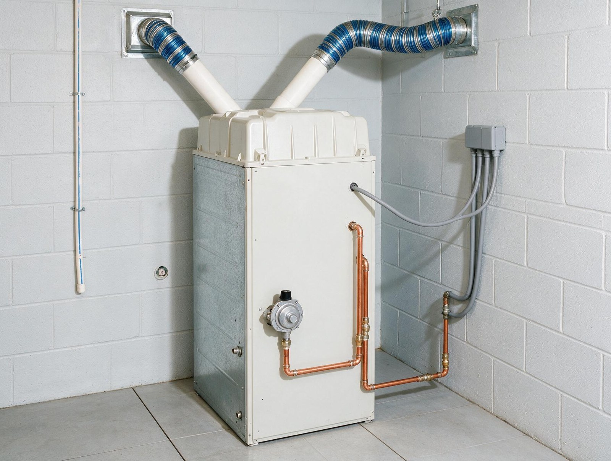

By the Editorial Team | Published: August 2026 | Last Updated: August 2026
The Sizing, Venting, and Combustion-Air Fundamentals That Determine Whether a Gas Furnace Installation Is Right
Gas furnaces have been the dominant residential heating technology in North America for the better part of a century, and the installation practices for them are well codified. What is less commonly understood by homeowners is how much the specific decisions made during sizing, venting, combustion-air provisioning, and efficiency-level selection determine the operational cost, comfort delivery, and safety profile of the finished installation. The equipment is well-standardized; the design decisions around it are what separate a good installation from a mediocre one.
This guide walks through the fundamentals of gas furnace sizing per Manual J, the venting requirements that split by efficiency category, the combustion-air rules that determine mechanical closet design, and the practical trade-offs across AFUE efficiency levels. The framework applies to natural gas and propane systems and is written for readers evaluating a furnace installation on merit.
Sizing Per Manual J Rather Than Rule of Thumb
The correct method for sizing a residential gas furnace is a Manual J load calculation that quantifies design heating load in BTU/hour at the 99 percent winter design temperature for the location. The calculation accounts for envelope construction, air leakage, window area and specification, and internal gains. The furnace input capacity is then selected to match the design heating load with modest margin (typically 10 to 15 percent), not the 40 to 50 percent oversizing that was common in earlier decades.
Oversized furnaces cost more upfront, cycle on and off more frequently (which wastes fuel during startup and shutdown), deliver worse humidity control in the shoulder seasons, produce larger temperature swings between cycles, and shorten equipment life through higher cycle counts. Right-sized furnaces cost less to install, run longer cycles at higher efficiency, and deliver better comfort. The Manual J calculation is the tool that produces the right answer.
The Two Venting Categories and Why the Distinction Matters
Standard-efficiency furnaces (AFUE 80 to 83 percent) are Category I appliances that vent hot flue gases through a Type B metal vent, typically routed up through the roof. The vent needs a specific rise and terminal height to maintain draft. Standard-efficiency furnaces are lower first-cost but leave meaningful energy in the flue gases and have specific installation constraints on vent routing.

Condensing high-efficiency furnaces (AFUE 90 to 98 percent) are Category IV appliances that vent through PVC pipe because their flue-gas temperature is low enough (below 140 F typically) not to require heat-resistant metal venting. The PVC vent can run horizontally out through a wall to a terminal on the exterior, which is far more flexible than Type B routing. High-efficiency furnaces are higher first-cost but recover heat from the flue that would otherwise be wasted and installation is generally more forgiving.
Combustion Air and Closet Design
A gas furnace consumes air for combustion and needs a reliable source. There are three basic approaches: draw combustion air from inside the house (typical on standard-efficiency Category I installations in older homes with plenty of air leakage), draw combustion air from a dedicated intake duct running from outside directly to the burner (typical on tight new construction where infiltration cannot be relied on), or use a direct-vent sealed-combustion appliance where the intake and exhaust both connect through a coaxial pipe to outside.
Direct-vent sealed-combustion condensing furnaces are the modern default on new construction because they eliminate the combustion-air dependency on the house envelope, prevent backdrafting hazards, and match the sealed-envelope philosophy that dominates current construction. Mechanical closet design in this configuration needs only service clearances, not combustion-air makeup.
Efficiency Trade-Offs Across AFUE Levels
The AFUE rating represents the annual fuel utilization efficiency: the percentage of the fuel's chemical energy that becomes usable heat. Higher AFUE means less fuel input per unit of heating output. The federal minimum AFUE for residential gas furnaces has climbed over time; current 2026 minimums vary by product category (non-weatherized furnaces: 95 percent AFUE minimum in northern states, 80 percent AFUE minimum elsewhere).
- 80 to 83 percent AFUE (standard efficiency): lowest first cost, Type B vent required, meaningful energy loss to the flue, best fit for climates and rate markets where operating hours are limited.
- 90 to 92 percent AFUE (mid-efficiency condensing): PVC vent, secondary heat exchanger recovers latent heat from flue gases, meaningful fuel savings over standard efficiency.
- 95 to 98 percent AFUE (high-efficiency condensing): tightest efficiency margins, condensate drain required, often paired with variable-speed blower for further seasonal efficiency gain, best fit for climates and rate markets where the fuel savings pay back the premium.
Blower Motor Category
Gas furnaces pair the combustion equipment with a blower that distributes conditioned air through the ducts. Three blower categories exist: single-speed permanent split capacitor (PSC), multi-speed PSC, and variable-speed electronically commutated motor (ECM). The blower category affects not just heating performance but also cooling-mode airflow (the same blower runs both heating and cooling) and total electrical consumption.

Variable-speed ECM blowers cost more upfront but ramp up gradually, maintain constant airflow across changing static pressure conditions, use substantially less electricity than PSC blowers on continuous fan operation, and deliver quieter startup. For homes with the AC paired to the same air handler, an ECM blower typically pays back through cooling-season energy savings within a few years even before considering the heating comfort benefits.
Furnace Selection Framework at a Glance
| Category | AFUE | Vent type | Best fit |
|---|---|---|---|
| Standard efficiency | 80 to 83 percent | Type B metal, vertical rise | Warm climates with modest heating hours |
| Mid-efficiency condensing | 90 to 92 percent | PVC horizontal or vertical | Mixed climates, moderate heating load |
| High-efficiency condensing | 95 to 98 percent | PVC sealed-combustion coaxial | Cold climates, high heating hours, tight envelope construction |
Frequently Asked Questions
How is a gas furnace's capacity described?
Gas furnaces are rated in BTU per hour of input (fuel consumption rate) and BTU per hour of output (usable heat delivered). Input times AFUE equals output. A 60,000 BTU/hr input furnace at 96 percent AFUE delivers about 57,600 BTU/hr of usable heat. The output is what matches the Manual J design heating load; the input is what determines the gas piping size and utility bill impact.
What is the difference between a natural gas furnace and a propane furnace?
Very little at the equipment level. Most furnaces can operate on either fuel with an orifice change and burner adjustment; the specification lists whether the shipped configuration is natural gas or propane. Propane has higher energy density per unit volume, which affects orifice sizing. Fuel-source cost varies substantially between the two and drives the operating cost picture more than any equipment difference.
Are condensing furnaces reliable long-term?
Yes. Condensing furnaces have been standard equipment since the 1990s and the technology is mature. The secondary heat exchanger that recovers latent heat is the most common wear point because it operates in a corrosive condensate environment; stainless steel and high-grade aluminum secondaries typical of modern equipment deliver 15 to 20 year service life comparable to standard furnaces. The condensate drain needs periodic inspection to prevent blockages, which is routine maintenance.
How is the flue vent length limited on a condensing furnace?
The manufacturer publishes an equivalent-length table that limits the total developed length of the intake and exhaust vents based on pipe diameter. Typical residential installations allow 40 to 60 feet of equivalent length in 3-inch PVC. Longer runs require larger diameter or split flue configurations. The vent routing is a coordination item at the design phase because it determines where the furnace can go relative to the exterior wall.
Does the furnace's blower affect cooling performance?
Yes, significantly. The blower moves the airflow for both heating and cooling. A blower sized for a lower heating airflow may not deliver enough airflow for cooling, which starves the AC coil and reduces cooling capacity. Proper design matches the blower's cooling airflow to the AC's requirement (typically 350 to 400 CFM per ton) and configures the furnace's heating airflow separately.
What is a modulating gas valve and when is it worth the premium?
A modulating gas valve varies the fuel input across a range (typically 40 to 100 percent of rated capacity) rather than firing at fixed high or low output. Modulating furnaces run longer at partial load, which improves seasonal efficiency and comfort. They cost more than two-stage or single-stage equipment and are best matched with variable-speed blowers. The premium is easier to justify in cold climates with many heating hours than in warm climates with limited heating runtime.
Can a gas furnace be paired with a heat pump for a hybrid system?
Yes. Dual-fuel systems pair a heat pump for mild-weather heating with a gas furnace for cold-weather heating, using an outdoor temperature sensor to switch between the two at the economic changeover point. The furnace typically installs in place of the standard air handler and shares the same duct system, refrigerant coil, and outdoor unit. Dual-fuel is a well-established configuration and gives the homeowner efficient operation across a wide climate range.
How disruptive is a furnace replacement in an existing home?
Straightforward like-for-like replacements typically complete in a single day. The technician removes the old furnace, installs the new unit in the same location, connects to existing gas, electric, ducts, and flue, verifies operation, and commissions. More extensive projects that involve a change in efficiency category (standard to condensing) or a new gas line often take longer because they include venting and possibly gas-line work. Homeowners with heating outages during winter typically get priority scheduling from HVAC contractors.
